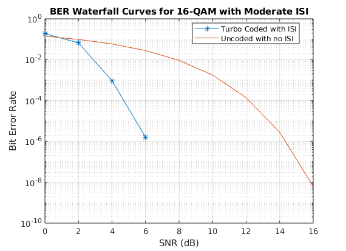

Contents
ECE408 Wireless Communications
Armaan Kohli Spring 2020 Project 1
clear all; close all; clc;
Part 3: Improved Link for Moderate ISI via Turbo Codes
M = 16; % The M-Ary Number k = log2(M); % bits per symbol SNR_Vec = 0:2:16; nSym = 1000; % Number of symbols per frame numIter = 5; % Number of iterations lenSNR = length(SNR_Vec); % Initializing the BER vector berVec = zeros(numIter,lenSNR); % Create a turbo convolutional encoder and decoder with two iterations turboEnc = comm.TurboEncoder('InterleaverIndicesSource','Input port'); turboDec = comm.TurboDecoder('InterleaverIndicesSource','Input port', ... 'NumIterations',2); % Creating an AWGN channel with moderate ISI awgnChannel = comm.AWGNChannel('NoiseMethod','Variance','Variance',1); chan = [1 .2 .4]; errorRate = comm.ErrorRate; % Code rate for the convolutional coding in side the turbo encoder codeRate = 2/3; for i=1:numIter for j = 1:length(SNR_Vec) % Initializing error statistics vector to calculate the BER errorStats = zeros(1,3); % Calculating the noise variance and converting EbNo to SNR with % modificaitons to account for the error control coding EsNo = SNR_Vec(j) + 10*log10(k); snrdB = EsNo + 10*log10(codeRate); noiseVar = 1./(10.^(snrdB/10)); % Adding the proper noise to the channel cooresponding to the SNR awgnChannel.Variance = noiseVar; % The while loop is needed to ensure the simulation is run long % enough to generate a waterfall curve. For a faster, but shorter % BER curve, change 1e7 to 1e6 while errorStats(3) < 1e7 % Generate random binary data data = randi([0 1], (nSym)*k, 1); % Interleaver indices for the Turbo encoder intrlvrInd = randperm(nSym*k); % Turbo encode the data encodedData = turboEnc(data,intrlvrInd); % Modulate the encoded data - no need to reshape bits into % touples because the modulator is set to take bit inputs modSignal = qammod(encodedData,M,'InputType','bit',... 'UnitAveragePower',true); % Apply channel ISI modSignal=filter(chan,1,modSignal); % Pass the signal through the AWGN channel receivedSignal = awgnChannel(modSignal); % Demodulate the received signal using log-liklihood ratio % (soft decision decoding) %receivedSignal = equalize(eq1,receivedSignal,data(1:50)); demodSignal = qamdemod(receivedSignal,M,'OutputType','llr', ... 'UnitAveragePower',true,'NoiseVariance',noiseVar); % Turbo decode the demodulated signal. We invert the % demodulating signal because the turbo decoder expects the % bits mapping in opposite order to that the demodulator % outputs receivedBits = turboDec(-demodSignal,intrlvrInd); % Calculate the bit errors errorStats = errorRate(data,receivedBits); end % Save the BER data for the specified SNR and reset the bit and % reset the bit error rate object berVec(i,j) = errorStats(1); reset(errorRate) end end berVec=mean(berVec,1); bps = log2(M)*((nSym) / 1000)*codeRate figure(1) % Generating Waterfall Plot semilogy(SNR_Vec,berVec,'-*') grid on xlabel('SNR (dB)') ylabel('Bit Error Rate') uncodedBER = berawgn(SNR_Vec,'qam',M); % Estimate of uncoded BER hold on semilogy(SNR_Vec,uncodedBER) title("BER Waterfall Curves for 16-QAM with Moderate ISI"); legend('Turbo Coded with ISI','Uncoded with no ISI','location','best')
bps =
2.6667
